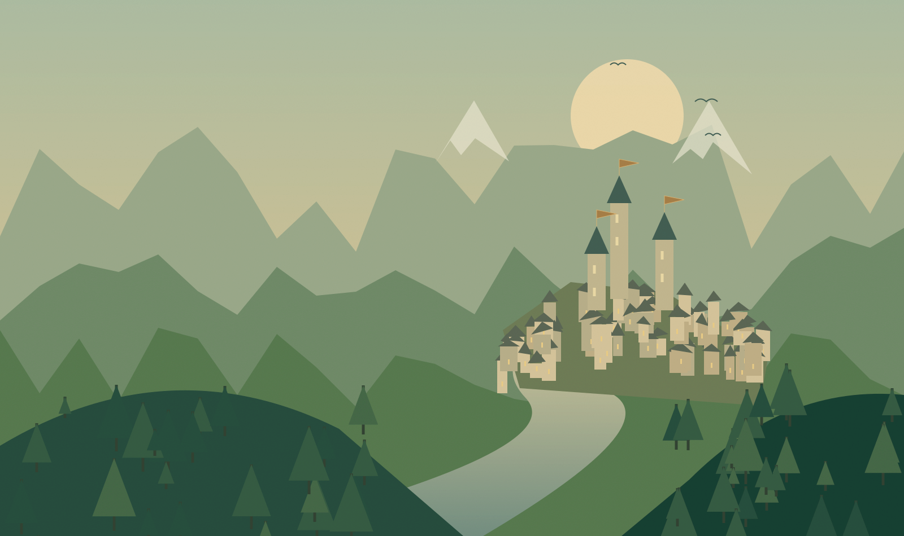

Libertad para existir
Sin clase obligatoria. Sin una única forma correcta de jugar.
UN MMORPG DE FANTASÍA PERSISTENTE
No necesitas salvar un reino para formar parte de su historia.
A veces, basta con abrir las puertas de una pequeña posada.
NO ERES EL ELEGIDO. ESO LO CAMBIA TODO.
En El Mundo Vivo, el herrero que forja una espada importa tanto como quien la empuña. Un hogar, una amistad o una ruta comercial pueden ser el principio de algo extraordinario.
Imaginamos un mundo compartido que continúa cuando cierras la puerta. Con habitantes que tienen sus propios sueños y lugares que conservan la huella de quienes pasan por ellos.
Sin clase obligatoria. Sin una única forma correcta de jugar.
Tus decisiones no terminan cuando entregas una misión.
Sin rachas diarias ni una segunda jornada de obligaciones.
Más allá de las rutas conocidas, siempre queda una historia por descubrir.

EL CORAZÓN DE LOS REINOS
Prados abiertos, bosques templados y ciudades comerciales donde todos los caminos parecen cruzarse. El lugar en el que una llegada corriente puede convertirse en el principio de una vida extraordinaria.
Tu primera parada: un gremio, un taller o una mesa junto al fuego.
No eliges una clase al nacer.
Descubres quién eres por el camino.
EL VALOR DE LO QUE CREAS
El que la empuñó. Y el que supo forjarla. Empieza como aprendiz, abre tu propio taller y descubre técnicas que podrían hacer llegar tu nombre hasta la corte de un reino.
«Elias nunca necesitó ser guerrero para vivir una gran historia.»Son caminos, no jaulas. Puedes aprender, combinar disciplinas y empezar de nuevo sin abandonar a tu personaje.
No un evento que todos deban completar.
Un mundo que aprende a seguir adelante.
Un derrumbe en una mina del norte cambia la vida mucho más allá de sus galerías. Esta es una de las historias conectadas que propone nuestra visión.
LUNES / LA TORMENTA
Una tormenta provoca un derrumbe en Dorskar. Hay trabajadores atrapados. El gremio local publica un contrato urgente y la región empieza a movilizarse.
NUESTRO COMPROMISO CON LA VISIÓN
Tu ausencia no es un castigo. Queremos que regresar después de un mes signifique descubrir nuevas historias, no perder lo que habías construido.
Lo extraordinario no se compra. La visión excluye vender poder competitivo, clases únicas o influencia política por dinero real.
La aventura también es una elección. PvP voluntario, vidas pacíficas completas y un solo personaje para todas tus etapas.
UNA GRAN VISIÓN. UN PRIMER PASO CONCRETO.
La profundidad antes que el tamaño. El primer objetivo definido en la biblia es conectar una ciudad, sus habitantes, sus oficios y su entorno. Hacer que una sola historia tenga consecuencias reales.
Leer el manifiesto del mundoEl Mundo Vivo es, por ahora, una visión de diseño. Los sistemas descritos son objetivos del proyecto, no funciones disponibles de un videojuego publicado.
Algunas leyendas empuñan una espada.
Otras mantienen encendida una posada.